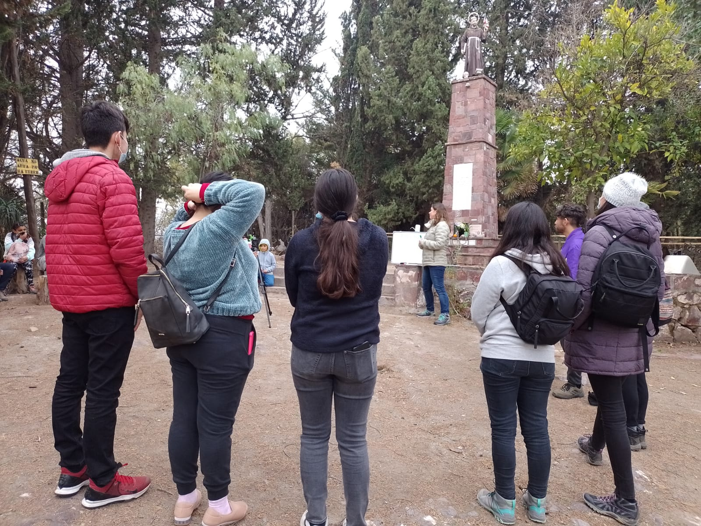

El Aula al Aire Libre del programa Vivo Curimón convierte al cerro en una sala de clases. Jardines, escuelas y liceos pueden visitarlo con una ruta autónoma, una ruta guiada con kit didáctico alineado al Currículum Nacional, o una ruta colaborativa creada junto a sus docentes.

Recorridos guiados para grupos y agrupaciones que quieran conocer en profundidad el cerro: su biodiversidad, su historia y las acciones de regeneración que se realizan junto a la comunidad de Curimón.

¿Tienes preguntas sobre las actividades?
Nuestro equipo está disponible para ayudarte a planificar tu visita.
Contactar